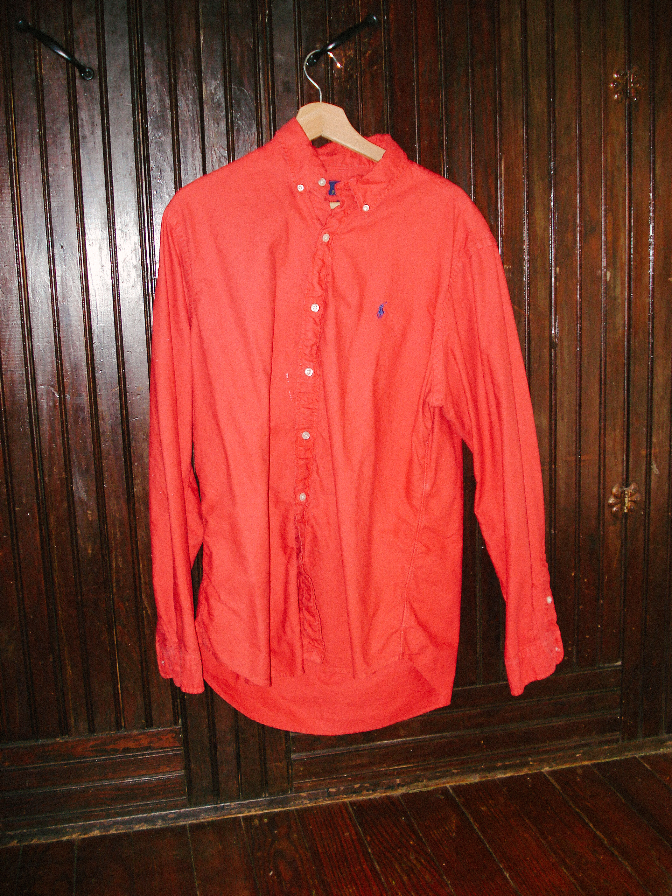

Monday was cold here in Texas. Not “light jacket” cold — the kind that actually gives you permission to dress. If you know this state, you know those days are rare. Sacred, even. Truly an excuse to layer the fuck up.
I finally dug out an M65 I’d been holding onto — waiting for the perfect moment to pair it with something that truly slaps — like this old Ralph button-down I’d thrifted just the day before.
The shirt had clearly been through the wash a few too many times. Wayyyyyy too many, if we’re being honest. But all that laundering gave it a perfect, worn-in fade.
Lately I’ve been leaning into amekaji and ivy — enough justification to finally break in a pair of full-grain leather Allen Edmonds I’d scored for basically nothing at Goodwill.
Altogether, one of those rare fits where everything just worked. Naturally, I took a few flicks. Queued them for the 'gram and then… hesitated.

Look at that sick-ass patina — nothing beats vintage Ralph, amirite?For a brief moment I was paralyzed by the idea of performance — or being a "performative male."
The phrase sounds ridiculous, but it tapped into something I couldn’t quite articulate. Still, the fit was good, so the pics went up.
Afterwards, I did something I almost never do: I got personal online. Asking myself the same question I’d just asked:
“As a man, how do you post fits to the ’gram without being performative?”
The anxiety isn’t new. Fear of being misunderstood is basically the cost of existing in public. Perception — the way I see it — is the endless network of alleys, side streets, and byways where other people decide what your vibes are. To be perceived is to be known, to be seen.
But what happens when people don’t like what they see? Not because you lack taste (if you're reading this, you’ve got an excess of it) but because you’re too cool.I can feel the confusion from here.
You’re thinking: how could I not be universally adored online? My vibes are immaculate. My fits are already doing stupid numbers in r/MFA. So what’s the problem?
Hate to break it to you, brother, but the days of posting a fly-ass #OOTD without someone diagnosing you as a peacocking fuckboy are mostly behind us. A man can’t simply step outside in a good jacket anymore — not without a little suspicion.
Still, if you happen to find yourself among the ever-shrinking demographic of “chill dudes,” there may yet be a way through this.
Consider this a first entry into your field guide for living a non-performative life online.